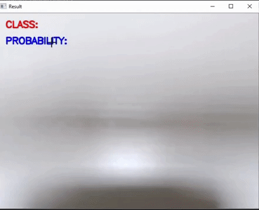
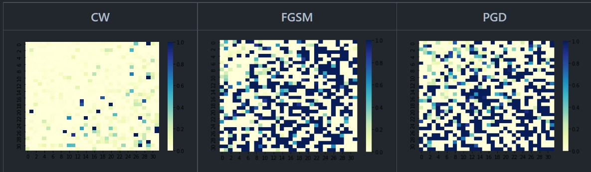

|
Research Interests
I am currently focused on enhancing the perception capabilities of robotic systems by developing robust and generalizable world representations, with a particular interest in leveraging foundation models for comprehensive scene understanding.
I have also worked on pose estimation under occlusions. My previous work encompassed various sub-domains, including video understanding, person-reid and shape approximation methods with an emphasis on utilizing unlabeled data for real-world applications.
I am always open to new collaborations and research ideas. Feel free to reach out if you are interested in working together!
|
News
Apr '25 : Serving as a reviewer for IJCV
NEW!! Mar '25 : Paper accepted to CVPR ABAW 2025!
Feb '25 : Serving as a reviewer for IROS 2025
NEW!! Feb '25 : Paper accepted to CVPR 2025!
Nov '24 : Serving as a reviewer for ICRA 2025
Oct '24 : Serving as a reviewer for ICLR 2025
Dec '23 : Started the CRIS Colloquium, check it out here
Oct '23 : Serving as a reviewer for ICASSP 2023
Aug '23 : I will be joining UC Riverside for my PhD!
Jun '23 : SoccerKDNet accepted to Springer PReMI 2023!
Mar '23 : Joined Siemens as a research engineer intern!
Jan '23 : Serving as a reviewer for MLRC'23
|
|
Leveraging Synthetic Adult Datasets for Infant Pose Estimation
(NEW!)
Sarosij Bose, Hannah Dela Cruz, Arindam Dutta, Elena Kokkoni,
Konstantinos Karydis, Amit K. Roy Chowdhury
IEEE/CVF Conference on Computer Vision and Pattern Recognition
(CVPR)-ABAW, 2025
Abstract
/
arXiv
/
BibTeX
Human pose estimation is a critical tool across a variety of healthcare
applications. Despite significant progress in pose estimation algorithms
targeting adults, such developments for infants remain limited. Existing
algorithms for infant pose estimation, despite achieving commendable
performance, depend on fully supervised approaches that require large
amounts of labeled data. These algorithms also struggle with poor
generalizability under distribution shifts. To address these challenges,
we introduce SHIFT: Leveraging SyntHetic Adult Datasets for
Unsupervised InFanT Pose Estimation, which leverages the pseudo-labeling-
based Mean-Teacher framework to compensate for the lack of labeled data
and addresses distribution shifts by enforcing consistency between
the student and the teacher pseudo-labels. Additionally, to penalize
implausible predictions obtained from the mean-teacher framework we
also incorporate an infant manifold pose prior. To enhance SHIFT’s
self-occlusion perception ability, we propose a novel visibility
consistency module for improved alignment of the predicted poses with
the original image. Extensive experiments on multiple benchmarks show
that SHIFT significantly outperforms existing state-of-the-art
unsupervised domain adaptation (UDA) based pose estimation methods by 5%
and supervised infant pose estimation methods by a margin of 16%.
@article{bose2025leveraging,
title={Leveraging Synthetic Adult Datasets for Unsupervised Infant Pose Estimation},
author={Bose, Sarosij and Cruz, Hannah Dela and Dutta, Arindam and Kokkoni, Elena and Karydis, Konstantinos and Roy-Chowdhury, Amit K},
journal={arXiv preprint arXiv:2504.05789},
year={2025}
}
|
|
|
Conformal Prediction and MLLM-Aided Uncertainty Quantification in Scene Graph Generation
(NEW!)
Sayak Nag, Udita Ghosh, Sarosij Bose, Calvin-Khang Ta, Jiachen Li,
Amit K. Roy Chowdhury
IEEE/CVF Conference on Computer Vision and Pattern Recognition (CVPR), 2025
Abstract
/
arXiv
/
BibTeX
Scene Graph Generation (SGG) aims to represent visual scenes by identifying objects
and their pairwise relationships, providing a structured understanding of image content.
However, inherent challenges like long-tailed class distributions and prediction
variability necessitate uncertainty quantification in SGG for practical viability. In
this paper, we introduce a novel Conformal Prediction (CP) framework, adaptable to any
existing SGG method, for quantifying predictive uncertainty by constructing well-calibrated
prediction sets over generated scene graphs. These prediction sets are designed to achieve
rigorous coverage guarantees. Additionally, to ensure the sets contain the most visually
and semantically plausible scene graphs, we propose an MLLM-based post-processing strategy
that selects the best candidates within these sets. Our approach can produce diverse possible
scene graphs from a single image, assess the reliability of SGG methods, and ultimately
improve overall SGG performance.
@article{nag2025conformal,
title={Conformal Prediction and MLLM aided Uncertainty Quantification in Scene Graph Generation},
author={Nag, Sayak and Ghosh, Udita and Bose, Sarosij and Ta, Calvin-Khang and Li, Jiachen and Chowdhury, Amit K Roy},
journal={arXiv preprint arXiv:2503.13947},
year={2025}
}
|
|
|
Unsupervised Domain Adaptation for Occlusion Resilient Human Pose Estimation
Arindam Dutta, Sarosij Bose, Saketh Bachu, Calvin Khang-Ta,
Konstantinos Karydis, Amit K. Roy Chowdhury
arxiv pre-print, 2025
Abstract
/
arXiv
/
BibTeX
Occlusions are a significant challenge to human pose estimation algorithms, often
resulting in inaccurate and anatomically implausible poses. Although current
occlusion-robust human pose estimation algorithms exhibit impressive performance
on existing datasets, their success is largely attributed to supervised training
and the availability of additional information, such as multiple views or temporal
continuity. Furthermore, these algorithms typically suffer from performance
degradation under distribution shifts. While existing domain-adaptive human pose
estimation algorithms address this bottleneck, they tend to perform suboptimally
when the target domain images are occluded, a common occurrence in real-life
scenarios. To address these challenges, we propose OR-POSE: Unsupervised Domain
Adaptation for Occlusion Resilient Human POSE Estimation. OR-POSE effectively
mitigates domain shifts and overcomes occlusion challenges via a mean-teacher
framework for iterative pseudo-label refinement. Additionally, OR-POSE enforces
realistic pose prediction by leveraging a learned human pose prior that incorporates
anatomical constraints into the adaptation process. Finally, OR-POSE avoids
overfitting to inaccurate pseudo-labels on heavily occluded images by employing a
visibility-based curriculum learning approach. Our experiments show that OR-POSE
outperforms analogous state-of-the-art methods by ~7% on challenging occluded
human pose estimation datasets.
@article{dutta2025unsupervised,
title={Unsupervised Domain Adaptation for Occlusion Resilient Human Pose Estimation},
author={Dutta, Arindam and Bose, Sarosij and Bachu, Saketh and Ta, Calvin-Khang and Karydis, Konstantinos and Roy-Chowdhury, Amit K},
journal={arXiv preprint arXiv:2501.02773},
year={2025}
}
|
|
|
SoccerKDNet: A Knowledge Distillation Framework for Action Recognition in Soccer Videos
Sarosij Bose, Saikat Sarkar, Amlan Chakrabarti
10th Springer International Conference on Pattern Recognition and
Machine Intelligence (PReMI), 2023
Abstract
/
arXiv
/
slides
/
code
/
Dataset
/
BibTeX
Classifying player actions from soccer videos is a challenging problem, which has
become increasingly important in sports analytics over the years. Most
state-of-the-art methods employ highly complex offline networks, which makes
it difficult to deploy such models in resource-constrained scenarios. Here, we
propose a novel end-to-end knowledge-distillation-based transfer learning
network pre-trained on the Kinetics400 dataset, and then perform extensive
analysis on the learned framework by introducing a unique loss parameterization.
We also introduce a new dataset named "SoccerDB1" containing 448 videos spanning
4 diverse classes of players playing soccer. Furthermore, we propose a unique
loss parameter that helps linearly weigh the extent to which each network’s
predictions are utilized. Finally, we conduct a thorough performance study
using various changed hyperparameters. We also benchmark the first classification
results on the new SoccerDB1 dataset, obtaining 67.20% validation accuracy.
The dataset has been made publicly available at:
https://bit.ly/soccerdb1
@InProceedings{10.1007/978-3-031-45170-6_47,
author={Bose, Sarosij and Sarkar, Saikat and Chakrabarti, Amlan},
editor={Maji, Pradipta and Huang, Tingwen and Pal, Nikhil R. and Chaudhury, Santanu and De, Rajat K.},
title={{SoccerKDNet: A Knowledge Distillation Framework for Action Recognition in Soccer Videos}},
booktitle={{Pattern Recognition and Machine Intelligence}},
year={{2023}},
publisher={{Springer Nature Switzerland}},
address={{Cham}},
pages={{457--464}},
abstract={{Classifying player actions from soccer videos is a challenging problem, which has become increasingly important in sports analytics over the years. Most state-of-the-art methods employ highly complex offline networks, which makes it difficult to deploy such models in resource constrained scenarios. Here, in this paper we propose a novel end-to-end knowledge distillation based transfer learning network pre-trained on the Kinetics400 dataset and then perform extensive analysis on the learned framework by introducing a unique loss parameterization. We also introduce a new dataset named ``SoccerDB1'' containing 448 videos and consisting of 4 diverse classes each of players playing soccer. Furthermore, we introduce an unique loss parameter that help us linearly weigh the extent to which the predictions of each network are utilized. Finally, we also perform a thorough performance study using various changed hyperparameters. We also benchmark the first classification results on the new SoccerDB1 dataset obtaining 67.20{\%} validation accuracy. The dataset has been made publicly available at: https://bit.ly/soccerdb1.}},
isbn={{978-3-031-45170-6}}
}
|
|
|
Realtime motion capture for VR Applications
Sarosij Bose, Jiju Poovvancheri
MITACS Globalink Technical Report
Abstract
/
report
/
slides
/
code
We present a novel shape approximation method using a pill decomposition approach
given the surface points and their corresponding normals at each point on the surface.
We first extract the maximal empty sphere representation of a given input shape
and then construct the `pill`: consisting of two sphere meshes. These collection of
pills are progressively decomposed to obtain a good approximation of the original shape.
Our algorithm is easy to reuse and implement and is currently available in a multi-processing setup.
To ensure reproducibility and further research, the source code and raw data has also been released.
|
|
|
Drone Assisted Forest Structural Classification of Kejimkujik National Park using Deep Learning
Sutirtha Roy, Sarosij Bose, Karen Harper, Vaibhav Jaiswal, Manu Bansal
3rd International Conference on Computing, Communication,
and Intelligent Systems (ICCCIS), 2022
Abstract
/
paper
/
slides
/
code
The wide array of terrestrial forest and wooded lands are one of the richest sources
because of their inherent structural diversity. For the diversity indicator of a forest,
structure plays a significant role. We propose a transfer learning framework based on
the ResNet-50 architecture, obtaining a test accuracy of 75.86%. In this paper, the
analysis of the structural diversity of Kejimkujik National Park is done using a drone
and deep learning methods that predict the forest’s structural class. We use a novel
forest structural diversity dataset collected using a DJI Mavic drone to train the
deep learning model.
|
|
|
Lipschitz Bound Analysis of Neural Networks
Sarosij Bose
13th IEEE International Conference on Computing Communication and Networking Technologies
(ICCCNT), 2022
Abstract
/
paper
/
slides
/
code
Lipschitz Bound Estimation is an effective method of regularizing deep neural networks
to make them robust against adversarial attacks. This is useful in a variety of applications
ranging from reinforcement learning to autonomous systems. In this paper, we highlight the
significant gap in obtaining a non-trivial Lipschitz bound certificate for Convolutional
Neural Networks (CNNs) and empirically support it with extensive graphical analysis. We also
show that unrolling Convolutional layers (or Toeplitz matrices) can be employed to convert
CNNs to a fully connected network. Further, we propose a simple algorithm to demonstrate the
existing 20×–50× gap in a particular data distribution between the actual Lipschitz constant
and the obtained tight bound. We also run thorough experiments on various network architectures,
benchmarking them on MNIST and CIFAR-10. All these proposals are supported by extensive testing,
graphs, histograms, and comparative analysis.
|
|
|
A Fusion Architecture model for Human Activity Recognition
Sarosij Bose, Amlan Chakrabarti
18th IEEE India Council International Conference
(INDICON), 2021
Abstract
/
paper
/
slides
/
code
Human Activity Recognition (HAR) is a domain of increasing interest, with several
two-stream architectures proposed in recent years. However, such models often have
a huge number of parameters and large storage needs due to the presence of a dedicated
temporal stream. In this paper, we propose an approach that performs a weighted late
fusion between the Softmax scores of a spatiotemporal I3D stream and another 2D
convolutional neural network stream (Xception). We show that our model achieves
competitive performance compared to existing spatial and two-stream architectures,
while significantly reducing the number of parameters and storage overhead.
|
|
|
ResCNN: An alternative implementation of Convolutional Neural Networks
Sarosij Bose*, Avirup Dey*
8th IEEE Uttar Pradesh International Conference
(UPCON), 2021
Abstract
/
paper
/
slides
/
code
Convolutional Neural Networks (CNN) have long been used for feature extraction
from images in deep learning. Here we introduce ResilientCNN or ResCNN, where
we show that when convolution is implemented as a matrix–matrix operation,
coupled with image processing techniques like Singular Value Decomposition (SVD),
it can serve as a better alternative to traditional convolution. We demonstrate
that our ResCNN learns using larger batch sizes and much higher learning rates
(~7×) without compromising on accuracy, compared to traditional convolutional
networks, by conducting experiments on the MNIST dataset.
*Equal Contribution
|
|
 |
TSCLite: A powerful and lightweight Traffic Sign Classification model Implementation
Sarosij Bose*, Avirup Dey*
Won 1st position in AI Entrepre-Neural, 2021 by GES, IIT Kharagpur and Intel
This work focuses on two lightweight Traffic sign classification implementations which can predict Traffic signs from any real time video feed.
Here, a model based on an slightly enhanced LeNet architecture has been used and trained on the German Traffic Sign Dataset (GTSD) which has
over 70000 images of traffic signs and over 40 various classes. Our model achieves a validation accuracy of over 98% and a training accuracy
of over 97%. This saved model is then optimized over the Intel OpenVINO Model Optimizer + Inference Engine and run directly for predicting
Traffic signs live from any video source(we have used webcam for our run). We have also provided a non optimized solution for comparison purposes.
*Equal Contribution
|
|
 |
RobustFreqCNN
Sarosij Bose
PyTorch implementation of this paper
This project is the unofficial implementation of the paper "Towards Frequency-Based Explanation for Robust CNN". It primarly deals with the extent to which image features are robust in the frequency domain. Here, the DCT Transform, the pre-trained ResNet 18
model and the RCT maps are generated from the adversarial as well as the normal images.
|
Misc
Served as a reviewer for ICLR, IROS, ICRA, WACV, ICASSP and MLRC
My talks at the KyushuTech-CU joint symposium on Activity Recognition and 3D Convolution here and here
On popular request, I have put up the MITACS application process on a blog
My djikstra number is 4
|
|
© Sarosij Bose (2023) | When in Rome, do as the romans do
|
|


{kind=link}
{kind=link}